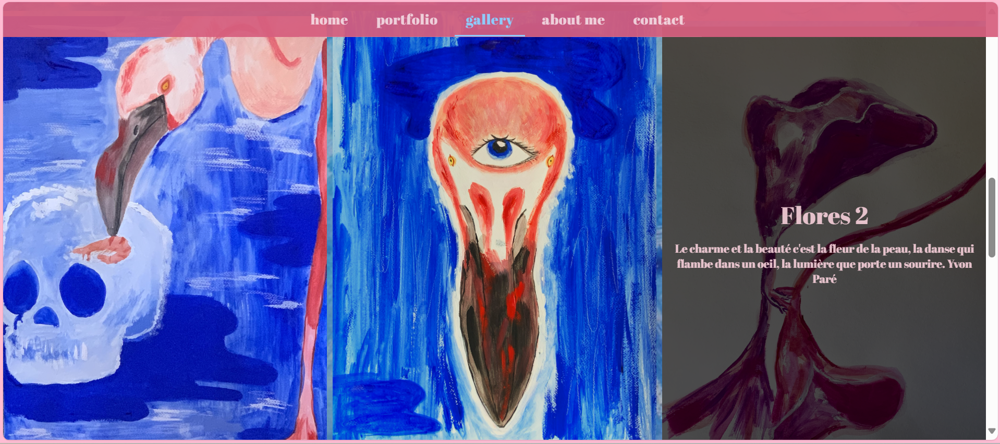
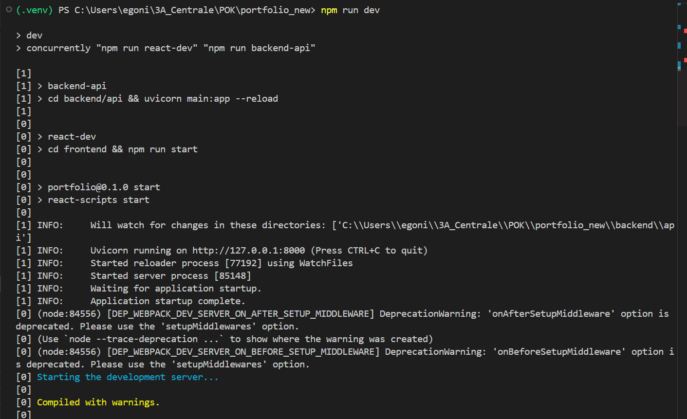

POK 2 - Mise en production de mon portfolio web d'art
- POK
- 2024-2025
- temps 2
- vert
- Emma Gonin
Mon objectif est la mise en production de mon site web React et d'améliorer le backend ainsi que le frontend avant son déployement.
Mon objectif est de mettre en production mon site web React à l'adresse suivante : [https://balsamite.aioli.ec-m.fr]. Dans un premier temps lors du premier sprint je souhaite terminer le développement de mon site web et dans un second temps le déployer de deux manières différentes.
Tâches
Sprints
But final.
Sprint 1 : Fin du développement
- [x] Améliorer la page portefolio
- [ ] Changer le système de mail si possible
- [x] Modifier la galerie pour pouvoir visualiser le titre de la peinture lorsqu'on passe la souris dessus
- [ ] Ajouter la navigation clavier pour le portefolio et le scroll => décalé au sprint 2 après de nombreux tatônnements
- [x] Voir où stocker mes peintures : au lieu d'un json créer une collection sur MongoDB et faire une API avec FastAPI ou SQLite
Sprint 2 : Déployement !
- [ ] Déployer le site sur aioli à la main, en créant mon serveur et en utilisant tmux pour survivre à la déconnexion.
- [ ] Tester une seconde manière de déployer, cette fois en dockerisant mon appli en parallèle de mon MON 2.2 sur Docker.
- [ ] Rajout post-sprint 1 : Trouver comment forcer le rafraichissement du DOM après un clic sur les flèches gauche ou droite pour enfin mettre en place la navigation clavier dans le portfolio.
Horodatage
Toutes les séances et le nombre d'heure que l'on y a passé.
| Date | Heures passées | Indications |
|---|---|---|
| Lundi 11/11 | 4H | Amélioration de la page portefolio, rajout de deux peintures à la bdd, rajout de la fonctionnalité "hovering" dans la galerie photo |
| Mardi 12/11 | 1H | Essais pour la navigation clavier et débuggage, essai avec un nouveau carousel qui aurait pû être navigué avec le clavier plus facilement mais le rendu ne m'a pas plu du tout |
| Mercredi 13/11 | 2H | Essais pour la navigation clavier/Mise en pause de cette navigation là : j'ai nettoyé le code et décalé cette tâche au sprint 2, deux heures peu productives |
| Jeudi 14/11 | 2H30 | Après la session peu productive de la veille et le cours de dev web sur Flask, je me suis décidée à implémenter ma propre API avec FastAPI. J'ai changé l'arborescence de mon projet pour séparer backend et frontend |
| Lundi 18/11 | 1H | J'ai créé mon nouveau repo git et j'ai push mon projet ainsi que fini de rédiger cette synthèse. |
Contenu
Le contenu du POK.
Premier Sprint
Amélioration du chargement des images
J'ai amélioré le carousel avec le chargement des images, ce qui m'ennuyait avec la version précédente du carousel c'était le chargement lent des images. Pour améliorer ceci, j'ai d'abord essayé de refaire le carousel de manière plus simple en faisant des tests mais je préférais le visuel que j'avais déjà, donc je suis repartie du code que j'avais à la fin du POK 1 et j'ai rajouté ces lignes de code qui chargent les images de manière asynchrone :
useEffect(() => {
const preloadImages = async () => {
const visibleItemIndices = [currentIndex, (currentIndex + 1) % items.length];
const preloadPromises = visibleItemIndices.map(index =>
loadImage(items[index])
);
await Promise.all(preloadPromises);
setIsLoading(false);
setVisibleItems(visibleItemIndices.map(index => items[index]));
};
preloadImages();
}, [currentIndex]);
const loadImage = async (item) => {
return new Promise((resolve, reject) => {
const img = new Image();
img.onload = () => resolve(img);
img.onerror = () => reject(new Error(`Failed to load image: ${item.img_url}`));
img.src = item.img_url;
});
};
Rajout nouvelles peintures / hovering Galerie
Une fois que j'étais satisfaite du résultat, j'ai rajouté deux peintures/dessins récents dans ma base de données. J'ai ensuite rajouté une fonctionnalité dans ma galerie photo qui est que lorsque l'utilisateur passe la souris sur une des images, s'affiche alors le titre et la description de l'image. Pour se faire, j'ai rajouté un state hoveredItem et une Box noire transparente qui se superpose à l'image.

Séparation backend/frontend
Après l'ajout de cette nouvelle fonctionnalité, j'ai voulu séparer le backend du frontend.
Avant, je stockais mes peintures et mon fichier data.json directement dans le dossier src de mon app React et j'importais le fichier dans mes composants : ce n'est pas propre ! Mais en faisant cela, je n'avais pas besoin de backend, mes fichiers étaient statiques.
Pour mon backend et préparer la migration des données à un autre endroit que directement dans mon application React, j'ai créé une API avec FastAPI afin de récupérer les données de mon fichier data.json qui se trouve dans le dossier backend. Pour déployer mon API sur le port 8000 et mon application React sur le port 3000 j'ai créé un script dans mon package.json dans mon application globale :
"scripts": {
"dev": "concurrently \"npm run react-dev\" \"npm run backend-api\"",
"react-dev": "cd frontend && npm run start",
"backend-api": "cd backend/api && uvicorn main:app --reload"
},
"devDependencies": {
"concurrently": "^9.1.0"
}
Ainsi, lorsque je lance la commande npm run dev, npm appelle mon script concurrently \"npm run react-dev\" \"npm run backend-api\". Le script react-dev va permettre de lancer mon application React et le script backend-api va permettre de lancer l'API avec Uvicorn.

J'ai créé un nouveau repo Git pour mon portfolio 2.0 avec le backend et le frontend séparés : https://github.com/egonin/art-portfolio-2.0.
Sprint 1 analyse post-mortem
Je suis contente de mon travail, je n'ai pas fini toutes mes tâches mais j'ai fait des choses que je n'avais pas envisagé clairement dans ma to-do list. Le dimensionnement de mes tâches est peut-être trop laxiste, pas assez explicite. Pour le sprint 2, j'espère que mes tâches sont raisonnables et la tâche sur l'amélioration du système de mails va passer à la trappe pour l'instant
Concernant la gestion de mon temps, j'ai fait 10h30, en réalité mon horodatage de ma session du jeudi 14/11 est peut-être erroné car j'ai été prise d'un élan et je n'ai pas vu l'heure passer, sachant également que je me suis interrompue au milieu de ma session de travail. Il y a donc une part d'incertitude sur cette session là, je pense +/- 1 heure.
J'ai eu de très bons retours de la part de mes proches sur l'avancée de mon site et j'ai hâte de voir ce que cela peut donner une fois mis en production.
Pour déployer le site, j'ai plusieurs idées, si je n'avais pas créer d'API il m'aurait suffit de builder mon application React et de copier le dossier /build/ dans ma machine virtuelle et le serveur Nginx aurait servi à déployer ce build. Maintenant il faut que je me renseigne sur comment faire en ayant l'API qui tourne en arrière-plan.
Second Sprint
Ressources
- Pour la gestion du backend et du frontend (les faire tourner en parallèle) : Stackoverflow, how to put backend and frontend together - returning react frontend from fastapi backend endpoint, https://stackoverflow.com/questions/62928450/how-to-put-backend-and-frontend-together-returning-react-frontend-from-fastapi
- Pour mes questions spécifiques au code, j'utilise l'extension VSCode de https://phind.com En prévision du sprint 2 :
- https://stacklima.com/comment-dockeriser-une-application-reactjs/
- https://www.youtube.com/watch?v=4xj8N4a36Zs&ab_channel=chillotech